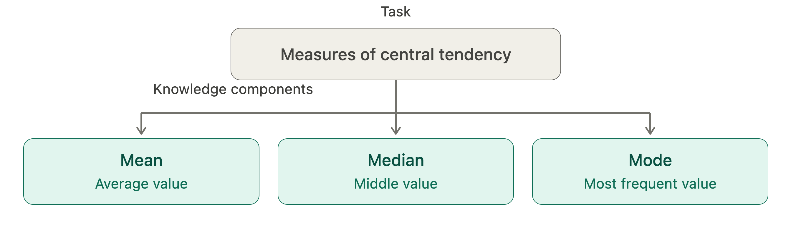
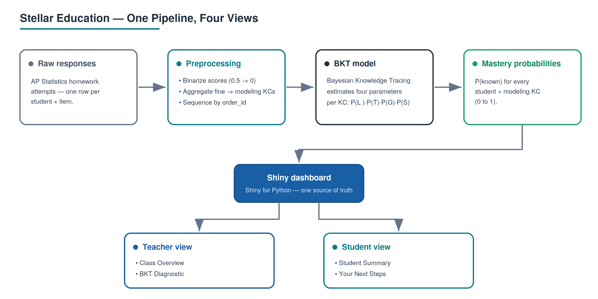
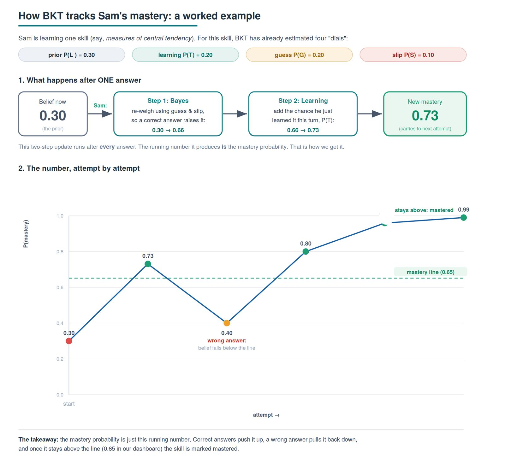
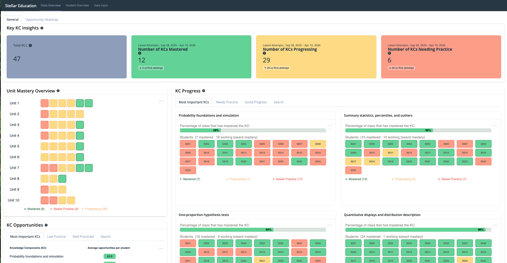
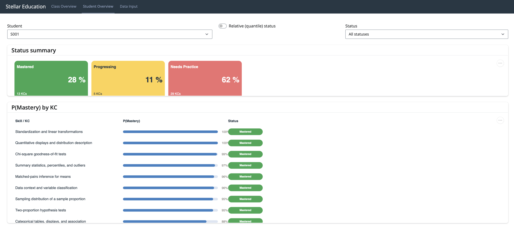
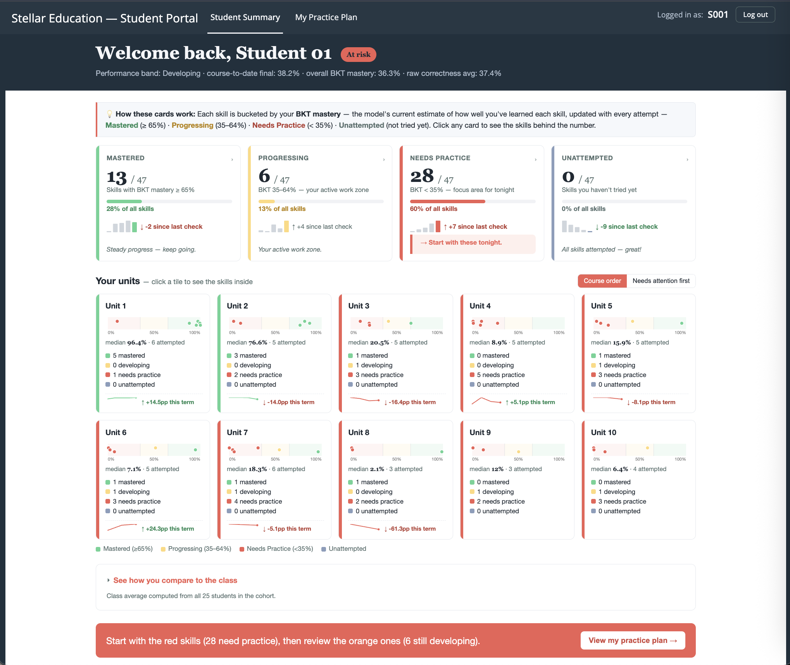
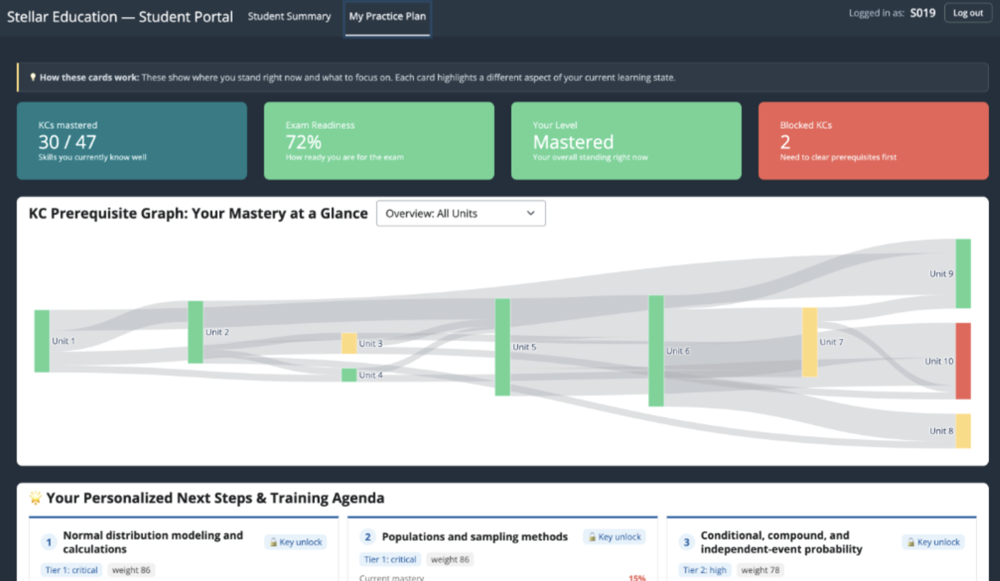

How we turned Homework Responses into Personalized Intelligence: A Skill-Level Progress Tracker for Stellar Education
1 Executive summary
A homework score is a poor diagnostic tool. Infact, report-card grades tell a parent or teacher how much a student got right. They say nothing about which skills are behind the number. Stellar Education asked us to close that gap; to give teachers, students, and parents a clear, skill-by-skill view of where each student actually stands. Our approach had two parts.
First, we converted raw AP Statistics homework responses into per-student, per-skill mastery estimates using Bayesian Knowledge Tracing (BKT), an established method for inferring whether a learner has genuinely grasped a skill from the pattern of their responses over time (Corbett and Anderson 1994).
Second, we delivered those estimates through an interactive Shiny dashboard built around two audiences: a teacher view for catching at-risk students early, and a student view that turns the same numbers into a personalised, what to work on next plan. Both views draw from the same underlying pipeline, allowing a teacher to identify struggling students at a glance and a student to see their own next steps just as readily.
2 Introduction
Stellar Education runs small-group private tutoring and has set itself a zealous goal: replace generic, one-size-fits-all instruction with something genuinely tailored to each learner. Achieving that requires knowing, with real precision, what a student does and does not understand. Considering the current processes utilized by their tutors, this level of detail was simply invisible in a grade.
At present, tutors must piece together a student’s progress from spreadsheets and memory. Which means genuine gaps often go undetected until it is too late to act on them. The cost of this falls unevenly across the people involved. Teachers default to treating grades as a proxy for comprehension, which produces support that reacts to problems rather than catching them early. Students, for their part, rarely know which specific skill is responsible for their difficulty, and without any visibility into their own trajectory, motivation tends to suffer. Parents sit furthest from the picture: their only window into progress is the periodic report card, with little insight in between.
To provide more context: a 70% on a quiz means three out of ten questions were answered incorrectly. It says nothing about which underlying skills those three questions were testing, whether those skills matter for material still ahead, or what a tutor should change in the next lesson. Closing that distance, from a single number to something a tutor can act on directly, became the central objective of this project.
- Reliable insight. For every student and every skill, produce a defensible probability of mastery, not a raw average, but a model-based estimate that accounts for guessing and careless errors.
- Instant visibility. Present these estimates through an interface a teacher can scan at a glance and explore further, removing the need for manual spreadsheet review. And for a student, a guideline for studying better than just review the material again.
- Timely intervention. Convert the estimates into prioritized next steps, so the gaps that matter most are surfaced first rather than left buried.
This report adopts the Knowledge Component (KC) as its primary unit of analysis: a single, well-defined skill that a student must apply in order to complete a task. A KC is more granular than a topic and more specific than a subject. It isolates exactly what a student needs to know, separate from everything else bundled into the same assignment.
Consider the task of computing measures of central tendency. Although it appears on a worksheet as one item, it actually draws on three distinct skills: finding the mean, finding the median, and finding the mode. Each of these is its own KC, and a student can be strong in one while struggling with another.
Working at the level of the KC, rather than the level of the whole assignment, is what allows this project to move past a single aggregate number and toward something specific enough to act on. Instead of this student scored 70%, the model can say this student has mastered the mean, is progressing on the mode, but remains uncertain about the median, and that distinction is precisely what determines what the next step should be.

3 Data
The project draws on assessment data from a single AP Statistics cohort at Stellar Education. Each row in the raw dataset represents one student’s attempt at one assessment item — so the unit of observation is a student-by-item event. A single item is mapped to the knowledge component (KC) it exercises, which lets the same records be aggregated up to the skill level or the student level as needed.
Because several items can target the same skill, the item-level rows are rolled up to a student-by-KC view for modeling: for each student and each KC, the sequence of attempts (ordered by order_id) becomes the input to the mastery model, and the model outputs a single mastery probability per student-KC.
3.1 Fields used by the model and dashboard
The analysis-ready file final_student_kc_data.csv is wide, but only a small set of columns drives the mastery estimate and the dashboard views:
student_id— anonymized student identifier (S001–S025).modeling_kc_id/modeling_kc_label— the KC each attempt is modeled against, plus its human-readable name.order_id/kc_attempt— attempt order, which preserves the per-KC sequence the model learns from.correct— whether the attempt was correct, the observed signal the model fits to.state_predictions— the modeled probability of mastery for that student and KC (the number behind every status badge and progress bar).unit— groups KCs into the ten course units for the Unit Mastery view.
3.2 Two levels of knowledge component
The data distinguishes a fine-grained skill from a coarser modeling skill. fine_kc_id fine_kc_label describe the specific concept an item tests (for example, “Observational unit and variable”), while modeling_kc_id / modeling_kc_label describe the broader skill the model is fit on (for example, “Data context and variable classification”). Modeling at the coarser level deliberately pools related items together, which gives each modeled KC more attempts to learn from — a direct response to the sparsity problem discussed below.
3.3 Curriculum and importance metadata
Beyond the attempt records, each KC carries metadata that the dashboard uses to rank and prioritize skills rather than treating them all equally:
rank/tier— an importance ordering (e.g. “Tier 1: critical”) that drives the “Most Important KCs” views.direct_dependents/downstream_dependents— the prerequisite structure between KCs; a single foundational KC can have dozens of downstream skills depending on it (one Unit 1 KC, for instance, is a foundation for 41 downstream KCs).estimated_exam_share_pct/unit_exam_weighting— how much each KC and unit is expected to count toward the AP exam, which informs which weak skills matter most.num_primary_items/num_student_records/mean_percent_score— coverage and difficulty summaries per KC.
3.4 Scale and shape
The cohort is small by machine-learning standards: 25 students across roughly 47 modeled knowledge components, drawn from ten units of the AP Statistics curriculum. Attempts were recorded between early September 2025 and April 2026.
3.5 The central limitation
The defining characteristic of this dataset is not its size but its sparsity per skill. Most knowledge components were attempted only one to three times per student. This matters because the mastery model learns from the sequence of attempts on each skill, and a sequence of length one or two carries very little information. Pooling items up to the coarser modeling-KC level (above) helps, but does not fully solve it. This single property shapes every modeling decision that follows, and it is revisited in the Methods section.
3.6 Data quality and ethics
- Mixed-type columns. A revision-note column (
2026_27_revision_note) loaded with mixed types and was excluded from modeling; it carries no signal for mastery estimation. - Sparse coverage. Not every student attempted every KC, so the student-by-KC matrix is incomplete. The dashboard treats absent attempts as “not started” rather than as failures.
- Privacy. Students are identified only by anonymized codes (S001–S025); no personally identifying information is used or displayed.
4 Data Science Methods

4.1 Why Bayesian Knowledge Tracing
The core modeling question is: given everything a student has answered so far, what is the probability they have actually mastered this skill? BKT answers this by treating mastery as a hidden state that updates after every new response (Corbett and Anderson 1994; Bulut, Shin, and Cormier 2023). Rather than producing one fixed estimate, BKT continuously revises its belief sing four interpretable probabilities, estimated separately for each KC:
- P(L0): Prior knowledge: the probability a student already possessed the skill before any practice took place.
- P(T): Learning rate: the probability that, following an attempt, a student transitions from not knowing the skill to knowing it.
- P(G): Guess: the probability of answering correctly without having mastered the skill.
- P(S): Slip: the probability of answering incorrectly despite having mastered the skill.
These four parameters describe the KC, not the student. To track an individual student’s mastery, BKT computes a running probability P(Known) that updates after every attempt. Starting from P(L0), each new response triggers two steps: first, a Bayesian update using P(G) and P(S) revises the belief based on whether the response was correct; second, a forward step using P(T) accounts for the chance the student learned from that attempt. The result is a new P(Known) value, carried forward as the input to the next attempt. This running value is what populates as our mastery probability.

Several alternatives were considered, and BKT was chosen because its characteristics align closely with the constraints of this project:
- Suited to small cohorts. Deep learning approaches to knowledge tracing typically require thousands of observations to train reliably. BKT, by contrast, estimates only four parameters per KC, making it appropriate for a cohort measured in the tens of students rather than thousands(Badrinath, Wang, and Pardos 2021).
- Matched to the structure of the data. Every attempt, by every student, on every skill, was recorded in sequence, precisely the input structure BKT was designed to model.
- Capable of updating without retraining. Each new student response refines the mastery estimate immediately, allowing tracking to continue uninterrupted across a full academic term.
- Transparent in its output. A mastery estimate expressed as a single probability between 0 and 1 allows a tutor to read a statement such as “this student has a 73% chance of having mastered this skill” and act on it without needing to interpret a black-box score.
Model estimation was carried out using the open-source pyBKT library, which kept the full pipeline Python-native and reproducible end to end (Badrinath, Wang, and Pardos 2021).
4.2 Feature engineering and preprocessing
Four preprocessing decisions were made, each driven by a requirement of the model rather than convenience.
- Binary outcomes. BKT learns from binary attempts (correct = 1, incorrect = 0) and outputs a continuous mastery probability. Partial-credit scores (0.5) were converted to 0 so every attempt remained a valid observation.
- KC aggregation. Fine-grained KCs were merged into broader modelling KCs (MKCs) so each skill had enough observations for stable parameter estimates.
- Sequencing. BKT requires attempts in order, but the original IDs were item labels, not a sequence. A per-student integer order (order_id) was created to preserve each student’s attempt trajectory.
- KC weighting. Partner-provided MKC weights were used in two places: to compute an exam-readiness measure as a weighted average of mastery, and to rank recommended next steps so high-priority gaps surface first.
One further decision sits between modelling and product: since BKT outputs a new estimate after every attempt, we keep only the most recent estimate per student–KC as current mastery, the model’s latest value is its best current belief.
4.3 Evaluation
To assess whether the model generalises to unseen students, we used a student-level train/test split, 70% of students for training, 30% held out for testing. Splitting by student rather than by attempt reflects real deployment conditions and prevents data leakage. We report two metrics. RMSE measures the average gap between the model’s predicted probability of a correct response and the actual outcome; lower values indicate better calibration. AUC measures whether the model correctly ranks struggling students below performing ones; a score of 1.0 is perfect and 0.5 is no better than chance.
4.4 Ethical Considerations and Limitations of our Approach
- BKT models mastery as a two-state variable, mastered or not, whereas real understanding lives on a continuum; partial knowledge is not captured.
- BKT also treats mastery as permanent, so it does not model forgetting between sessions (Bulut, Shin, and Cormier 2023). And as a tool that influences how a teacher allocates attention, it carries the usual responsibility: the estimates should inform a tutor’s judgment, not replace it, especially for students with little data, whose estimates are the least certain.
5 Data product and results
The deliverable is an interactive dashboard, built with Shiny for Python and Altair, that turns the per-student, per-KC mastery probabilities into a view a teacher can act on. It is organized into two pages that answer two different questions: Class Overview (“How is the whole class doing?”) and Student Overview (“How is one student doing?”).
5.1 Class Overview
The Class Overview opens with four summary boxes: the total number of KCs and how many are currently Mastered, Progressing, or Needing Practice, each compared against the cohort’s first attempt to show movement over time. Below them, three panels give complementary views of the same cohort.
- Unit Mastery Overview. A grid where every KC is a coloured tile, grouped by unit — green for mastered, yellow for progressing, red for needs practice. It makes weak units visible at a glance.
- KC Progress. For a selected KC, the class is shown student by student, alongside the percentage of the class that has mastered that skill. Tabs separate the most important KCs, those needing practice, and those showing good progress.
- KC Opportunities and Opportunity Heatmap. These surface how much practice each skill has received. The heatmap plots students against KCs and shades each cell by practice volume, exposing skills the whole class has barely attempted.


5.2 Student Overview
The Student Overview focuses on one learner. A status summary shows the share of that student’s KCs that are Mastered, Progressing, or Needing Practice, and a detailed table lists every KC with its mastery probability as a progress bar and a coloured status badge. Two controls shape the view: a status filter, and a toggle between absolute and relative grading.
Status thresholds. A KC’s status is assigned from its mastery probability using fixed cut points:
| Status | Mastery probability |
|---|---|
| Mastered | ≥ 0.65 |
| Progressing | 0.35 – 0.65 |
| Needs Practice | < 0.35 |
Absolute vs. relative status. In absolute mode the thresholds above are applied directly, answering “is this skill objectively mastered?” In relative (quantile) mode the same KCs are graded against the whole class’s distribution, answering “where does this student rank among peers?” A strong student therefore stays mostly green under the relative view, while a struggling student’s KCs are spread across the three bands rather than all flagged red.


5.3 Results
The headline result is that the dashboard produces stable, interpretable mastery estimates for every KC, which was not possible with the raw data alone. Where the original sparse data caused the mastery model to fail (see Methods), the corrected pipeline yields probabilities that vary sensibly across students and skills, so the status labels reflect real signal rather than gaps in the data. A teacher can now open a single screen and see which units are weak, which skills the class has under-practised, and exactly where any individual student stands across all of their knowledge components.
6 Conclusions and recommendations
The project set out to give AP Statistics teachers something homework scores alone cannot provide: a per-student, per-skill view of mastery that is specific enough to act on. That goal was met. The final dashboard moves a teacher from a single ambiguous percentage to a clear picture of which knowledge components each student has mastered, is progressing on, or needs to practise.
6.1 Reflections
The most important lesson was methodological. The biggest obstacle was not model choice but data shape: with only one to three attempts per KC, the mastery model could not be estimated reliably and its parameters collapsed to degenerate values. Expanding the number of attempts per KC restored stable estimates. In other words, for this kind of sequential mastery model, the number of attempts per skill matters more than the raw number of students.
6.1.1 Limitations
- Augmented signal. Reliable estimation depended on expanding sparse sequences. This is a reasonable engineering response to a data shortage, but it is a stopgap; the estimates are only as trustworthy as the assumptions behind that expansion.
- Single small cohort. Results come from 25 students in one course. Patterns should not be generalized to other cohorts or subjects without re-fitting.
- No external validation yet. Mastery estimates have not been checked against an independent outcome such as a later exam, so their predictive validity is still unconfirmed.
6.1.2 Recommendations
- Collect more attempts per KC. The cleanest long-term fix is more practice opportunities per skill, which removes the need to expand sparse sequences at all.
- Validate against held-out outcomes. Compare mastery estimates with a later, independent assessment to confirm they predict real performance, not just fit the training data.
- Extend the product. Natural next steps include an early-alert view for students falling behind and use of the prerequisite structure already present in the data (direct and downstream dependents) to recommend what each student should practise next.
In short, the dashboard delivers on its core purpose today, and its main risk — thin data per skill — is also its clearest path forward: collect more practice, validate against real outcomes, and build on a foundation that is already in place.
7 References
8 Appendix
Full code, the reproducible pipeline, and product documentation are available in the project repository: GitHub link.